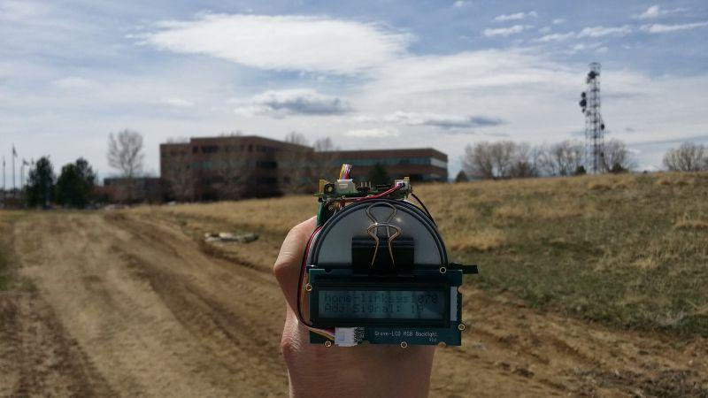

Done with tedious mono color backlight? This Grove enables you to set the color to whatever you like via the simple and concise Grove interface. It takes I2C as communication method with your microcontroller. So number of pins required for data exchange and backlight control shrinks from ~10 to 2, relieving IOs for other challenging tasks. Besides, Grove - LCD RGB Backlight supports user-defined characters. Want to get a love heart or some other foreign characters? Just take advantage of this feature and design it!
This product is a replacement of Grove - Serial LCD. If you are looking for primitive 16x2 LCD modules, we have green yellow backlight version and blue backlight version on sale also.

This demonstration will show you how to use Grove - LCD RGB Backlight, we need a Seeeduino V3.0 else.
Hardware installation is very easy, because there's an I2C Grove in Seeeduino,
so what we need to do is connect it to I2C Grove via a Grove cable.
You can download the demo code in github, click here, then extract it to anywhere.
If you have some problem with this step, please refer to Getting Start With Seeeduino
there is a Hello World example in the library, open it, and upload to Seeeduino V3.0.
then you can see "Hello world" on the first row, and second row will print the number of second since reset.
One of Grove - LCD RGB Backlight's most important feature is: you can change the color backlight, and it's a very simple thing, just use the following function:
void setRGB(int r, int g, int b);
Then let's try a Red backlight.
Modify the code about color into :
const int colorR = 255; const int colorG = 0; const int colorB = 0;
Upload the code again, woo, see the backlight turn to Red? Then why not try another color? Whatever you like.
This example will change backlight color and display text. You should connect to GrovePi+ with it like the following picture.
# Grovepi + grove RGB LCD module
# Example for using the Grove I2C color LCD
from grove_rgb_lcd import *
while(True):
setText("Hello world\nLCD test")
setRGB(0,128,64)
for c in range(0,255):
setRGB(c,255-c,0)
time.sleep(0.01)
setRGB(0,255,0)
setText("Bye bye, this should wrap")
time.sleep(1.5)
cd GrovePi/Software/Python/grove_rgb_lcd/
sudo python example.py
The best way to learn something, is to create a project with it.
Recipe Community is a place which gathers a lot of amazing projects with step-by-step tutorials.
Makers in the community have made a lot of awesome projects with the Grove - LCD RGB Backlight , check this out!

Make a focused antenna with a pringles can.

Get to know the temperature and pressure around you with a smart DIY home monitor

Copyright (c) 2008-2016 Seeed Development Limited (www.seeedstudio.com / www.seeed.cc)